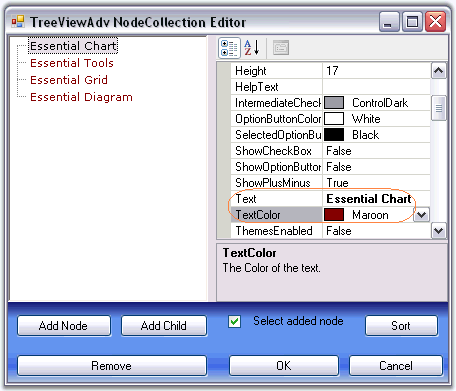
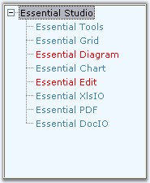

Foreground Settings for the tree node text
Using the Text and TextColor property, individual node's text can be edited and colored respectively.
Using the Font and the ForeColor properties of the control, the text and text color of the nodes can be set for all the nodes in the TreeView control.
 Note: The font style for individual nodes,
can be set using the Font property available for individual nodes using
NodeCollection Editor.
Note: The font style for individual nodes,
can be set using the Font property available for individual nodes using
NodeCollection Editor.
|
TreeViewAdv Properties |
Description |
|
Font |
Specifies the Font style of the node text. |
|
ForeColor |
Specifies the text color of the nodes. |
|
TreeViewAdv Properties |
Description |
|
Text |
Sets text for the node. |
|
TextColor |
Sets the color for the specific node text. |
Note: When you set the ForeColor property
for TreeViewAdv control, it will get reflected in the Node's TextColor property.
User can change the color for specific nodes using TreeNodeAdv.TextColor
property.

Figure 1148: TextColor property in the TreeViewAdv NodeCollection Editor
See Also
Painting the foreground of the Specified Nodes
User can paint specific nodes using the BeforeNodePaint event.
|
TreeNodeAdv event |
Description |
|
BeforeNodePaint |
Handled before a node is being painted. |
Note: OwnerDrawNodes property should be
set to true while handling this event.
|
treeViewAdv Properties |
Description |
|
OwnerDrawNodes |
Indicates if the BeforeNodePaint event will be fired before drawing a node. |
|
[C#]
this.treeViewAdv1.OwnerDrawNodes = true; // Enabling Node's Foreground private void treeViewAdv1_BeforeNodePaint(object sender, TreeNodeAdvPaintEventArgs e) { if (e.Node.Index == 2 | e.Node.Index == 4) { e.ForeColor=Color.Red; } } |
|
[VB.NET]
Me.treeViewAdv1.OwnerDrawNodes = True ' Enabling Node's Foreground Private Sub treeViewAdv1_BeforeNodePaint(ByVal sender As Object, ByVal e As TreeNodeAdvPaintEventArgs) If e.Node.Index = 2 Or e.Node.Index = 4 Then e.ForeColor = Color.Red End If End Sub |

Figure 1149: Node2 and Node4 painted by using BeforeNodePaint Event
Active Node Foreground Settings
SelectedNodeForeColor property lets you paint the selected node.
|
treeViewAdv Properties |
Description |
|
SelectedNodeForeColor |
Indicates the forecolor of the node that is selected. |
|
[C#]
this.treeViewAdv1.SelectedNodeForeColor = System.Drawing.Color.Gray; |
|
[VB.NET]
Me.treeViewAdv1.SelectedNodeForeColor = System.Drawing.Color.Gray |
Post Default Drawing
Users can also draw on the node, after the default drawing routines have rendered the node appropriately. Users can do so by first turning on OwnerDrawnNodes in the tree and listening to the AfterNodePaint event.
See Also